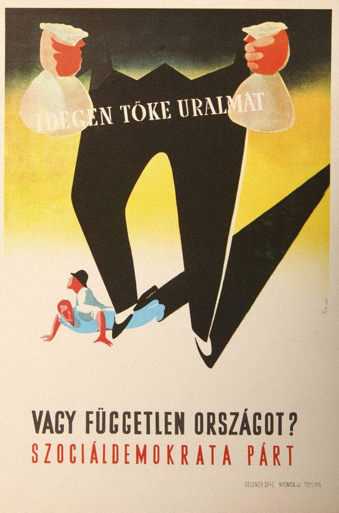
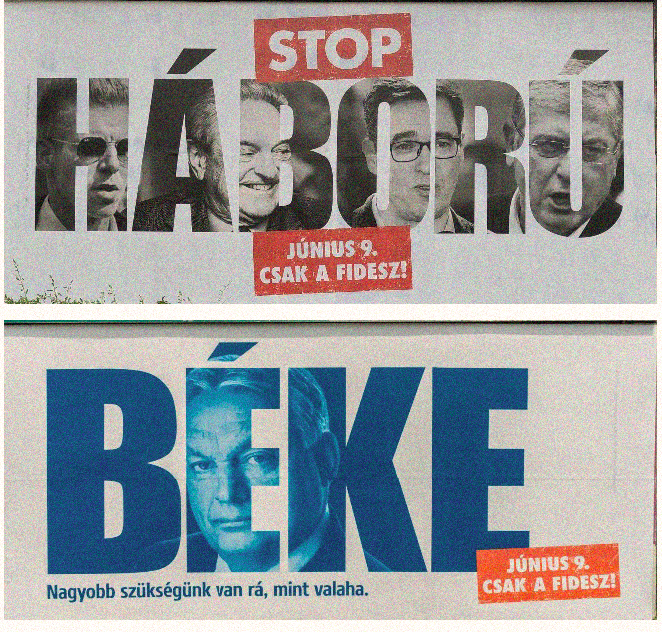
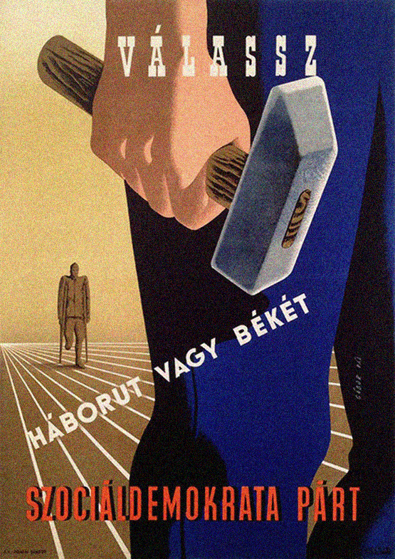
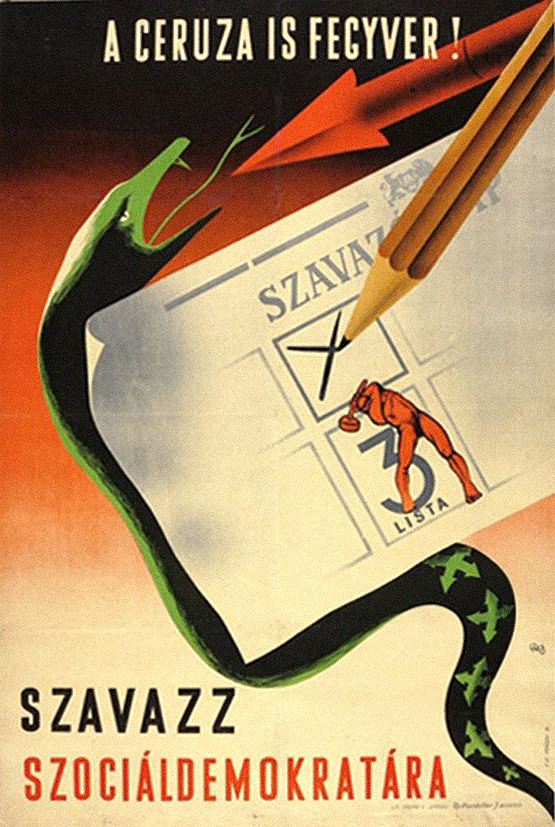
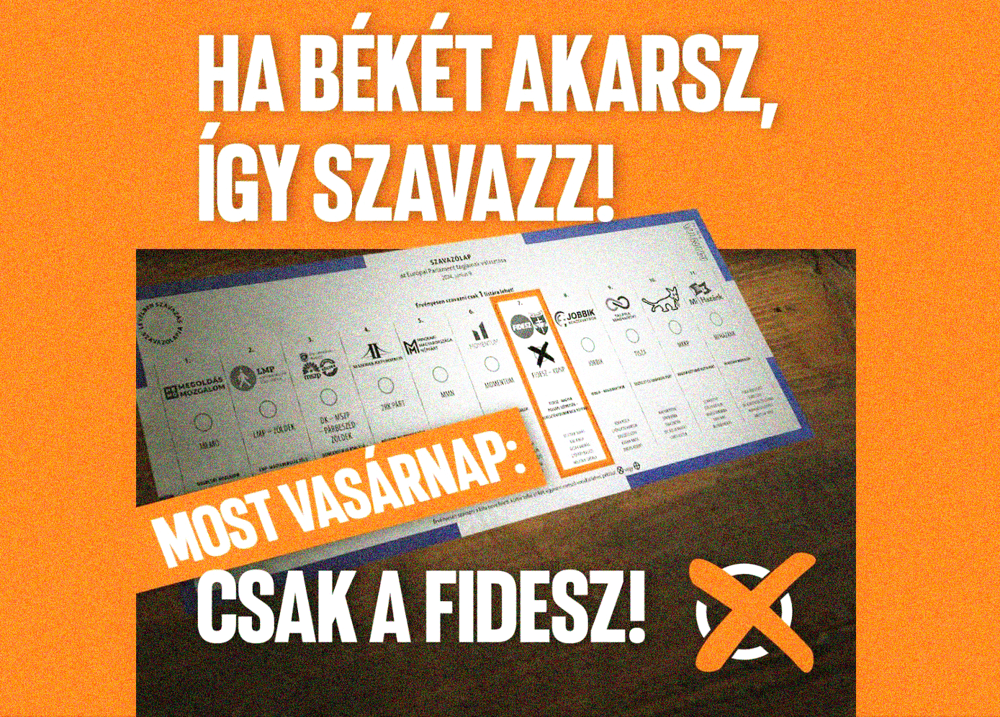
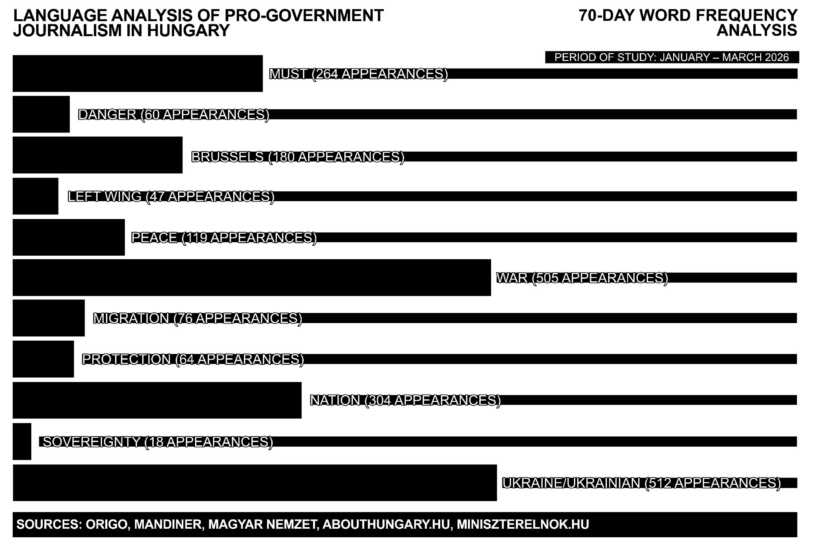
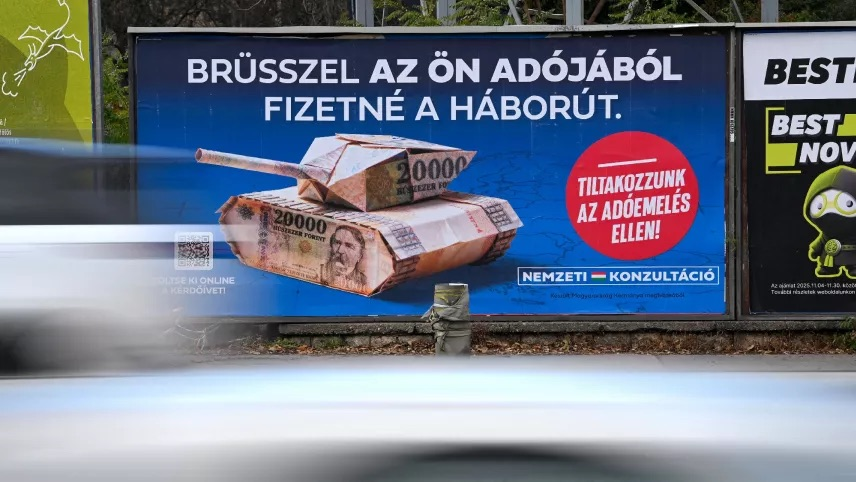

Visual and Linguistic Patterns in
Hungarian Political Communication:
Comparing the 1950s Socialist Era
to Today's Government Messaging
00 Abstract
This thesis looks at the parallels between Hungarian communist-era political communication and the communication of the contemporary ruling party, Fidesz. The aim is to show how visual and linguistic patterns that were once present during the communist era are still present today.
Growing up in Hungary, I witnessed a gradual shift in public communication. When I was around nine years old, in 2010, government messaging was barely seen—but now every corner is covered in billboards repeating similar messages through a unified visual language.
This observation is the start of my research approach, divided into two directions: visual design and language. For the visual analysis, I worked with an archive of approximately 100 communist-era propaganda posters and 100 contemporary Fidesz billboards, which I collected, paired, and sequenced. In the linguistic study, I tracked word frequency across 70 days of pro-government articles. These two approaches support each other in exploring how contemporary Hungarian political communication draws on visual and linguistic patterns from the post-World War II period in Hungary, roughly 1945 to 1956.
This research informs my graduation project, where collected information and imagery will be translated into visual form.
01 Introduction


Growing up in Hungary, I witnessed a gradual shift in the public landscape during the years following the 2010 parliamentary elections. Billboards that once advertised consumer products have been gradually replaced by government messaging. I recall how the content of these began to switch—when I was around nine years old, in 2010, government messaging was barely present in public space. Now it is everywhere. On the highway, at the bus stop, on the side of every major building. For example, in February 2026, a single 150-meter stretch of street in Budapest's 13th district was found to have 64 Fidesz1 campaign posters on it.2
Today, the government uses aggressive visuals to construct clear enemy images, portraying specific groups or individuals as a threat to society.3 By making people feel vulnerable and unsafe, the messaging shows that only a strong authority can keep them safe.4 Both the threat and the solution are always visible. In the communist era5 this role was filled by the communist party. Today it is Viktor Orbán, the leader of Fidesz.
Fidesz won a two-thirds majority in the 2010 parliamentary elections, which gave the party near-complete control over legislation, media, and public space. In the years that followed, the visual environment of Hungary changed fundamentally. State-funded billboard campaigns began appearing across the country and there was no way to avoid them. These were not commercial advertisements. They were government messages, and from looking at the archive, they followed a consistent pattern: an enemy is presented, a threat is named, and Fidesz positions itself as the only solution.
As a Hungarian graphic designer, I am specifically interested in how contemporary political communication in Hungary borrows visual rules established decades ago, and how there is a repetition of dehumanising stereotypes that reappear in Fidesz campaign materials. In my research I focus on two distinct periods in Hungarian history: the early communist era, roughly 1945 to the late 1950s, and contemporary Fidesz communication from 2010 to the present. I examine design choices in the use and re-use of visual symbols, and how this strategy shapes political approaches to communication even as ideologies change.
In comparing these different moments in time, I explore the visual and linguistic patterns in communist propaganda and how they reappear in modern Hungarian political communication.
In this essay I consider two case studies. First, I examine a visual archive of Hungarian communist-era propaganda posters from 1945 to the late 1950s next to contemporary Fidesz billboards from 2010 to 2026. In doing so I am analyzing how these posters are composed, what they show, and what they communicate. Second, I explore the language of pro-government Hungarian journalism from 2025 to 2026, by tracking which words keep returning and what that repetition does. These case studies are analyzed in relation to each other, and I reflect on how similar visual and linguistic patterns from the early communist era reappear in contemporary Fidesz communication.
02 Case Study 1—The Visual Archive

This case study works with the visual archive of approximately 100 Hungarian communist-era propaganda posters and 100 contemporary Fidesz billboards. I began collecting these images through online research, selecting based on topic—focusing specifically on political messaging and filtering out commercial advertisements and unrelated content from both periods. I built an archive that spans from 1945 to the late 1950s on one side, and Fidesz campaigns from 2010 to 2026 on the other. From there, I started a process of pairing and sequencing—grouping images based on shared message, colour, and composition. Looking at these pairings reveals a consistent visual language, separated by up to eighty years and two completely different political ideologies, yet recognizably similar.
Going through this archive, I came across several communist-era posters that felt familiar. Not because I know that archive so well, but because living in Hungary in recent years means being surrounded by the same message in public spaces every day. And not just the same message—similar visual elements too.


The communist-era posters in this archive follow the visual principles of socialist realism, the dominant style enforced by the regime from the late 1940s onwards. The compositions are monumental, with large figures filling the frame: workers, soldiers, party symbols in bold colour. Each poster carries a single clear message, communicated through scale and contrast. When an enemy appears, it is shown small, shadowed, distant. The protector is always large, central, forward-facing. This binary logic between strength and threat is built directly into the structure of each poster.6
In the contemporary billboard collection, Fidesz displays its enemies as distorted monsters or puppets. They use shadows, black and white, and heavy typography to send a clear message: they are bad. The images are always taken from unflattering moments—screenshots that make them look angry, inappropriate, unhinged. Taken out of context, they are made to look threatening. Meanwhile the prime minister and the government are always shown in a flattering way: composed, smiling, convincing, carefully edited.
In the Háború (war) billboard, four faces are integrated into the letterforms of the word itself, becoming part of the threat it names. They are cropped, overlapping, difficult to read as full human beings. The black and white treatment is an important aesthetic choice. It dehumanizes, it removes individuality, and it echoes a long visual history of alienation. Removing colour from a person's image takes away their individuality and places them in a long tradition of documentary photography used to catalogue and distance the threatening other. Seen repeatedly across hundreds of billboards, this treatment stops registering as a choice at all.7
Placing these two collections side by side, a similar logic appears across both periods. On the left, four faces are compressed into the letters of the word Háború. The faces appear cropped, overlapping, and become difficult to read as human beings. Moreover, the photography is black and white. The expressions are angry, caught in unflattering moments.
When compared, the Béke billboard shows a large, calm, blue-tinted image of Orbán, centered and composed. The blue is not simply a colour—in the context of Hungarian political communication it signals Fidesz, safety, and authority. In colour psychology, blue is consistently associated with trust, authority, and calm—it is the colour governments and institutions reach for when they want to appear stable and reliable. The type is massive, filling the entire frame, making it feel like a statement, not a question. The tagline below, "We need it more than ever," turns the viewer into someone who already agrees. In the 1947 Gábor Pál poster, a monumental worker stands in the foreground, hammer in hand, occupying the full height of the composition. Behind him, a war veteran with a missing leg stands small and distant. The offset lithography on paper uses bold colours to show one figure dominating the other.
Once you look at both, the structure is the same: the enemy is made small and threatening, the protector is made large and reassuring. The differences are in the technology and the scale. In 1947, each poster was individually designed and printed in limited runs, the result of a slow process involving hand-drawn compositions and offset lithography. Fidesz produces billboard campaigns at mass scale—digitally composed, commercially printed, and placed across the entire country within days.
Looking at these campaigns from a design perspective shows that the evolution of printing technology hasn't changed the underlying political intent. Ruben Pater is a Dutch graphic designer and researcher whose work examines the political dimensions of design. In The Politics of Design (2016), he argues that design cannot be separated from ideology—every design decision carries political meaning, whether intended or not. He points out that a colour or typeface might appear neutral, but its meaning is always culturally dependent.8 This is exactly what the archive shows. Pater's argument complicated my reading in a specific way—it made visible that the blue of the Béke billboard or the heavy type of the Háború campaign carry the weight of all the times similar choices were made before, in similar political contexts.
These were the exact same two options that a 1947 election poster by Gábor Pál advertised for the Social Democratic Party.9 Printed in paper and offset lithography, the poster is a monumental composition typical of the late 1940s—a massive figure occupies the foreground with a hammer in its hand. In the background a diminished war veteran stands, small and distant. The message is direct: vote correctly, or another war begins. Pál trained at the Atelier art school, where modernist tendencies were influential, and the poster reflects that. It is simple, clear, one idea expressed through scale and contrast. The same heavy type, the same binary logic, the same scale difference between threat and protector appears in the 2026 Fidesz campaign. This is a completely different ideology, yet it communicates a similar message.


Another example is the visual connection between a Fidesz campaign post from 2024 and the communist poster "A ceruza is fegyver!" (The pencil is also a weapon!) from 1947. Both tell the viewer there is only one correct way to vote. The metaphorical use of the snake in the 1947 poster displays the presence of the enemy, and the pencil striking through it symbolizes the power that lies in the hands of the viewer.10 Decades later, Fidesz uses the same logic: here is the ballot, here is the correct box, vote for peace. The act of voting is framed as an act of protection.
Jonas Staal is a Dutch artist and researcher whose work focuses on the relationship between art, propaganda, and political power. In Propaganda Art: From the 20th to the 21st Century (2019), he argues that propaganda uses design to construct a political reality, not simply to communicate false information.11 For Staal, every visual choice in propaganda is purposeful: the enemy image, the scale, the composition. These are tools, not aesthetic decisions. They make a particular version of the world feel real and inevitable. In this thesis, I trace this pattern in the Hungarian archive. The creation of the enemy image is the foundation everything else is built on.
Engaging with Staal's work shifted how I read the archive. What I had initially approached as aesthetic observations—the scale of the type, the colour contrast, the cropping of faces—became legible as purposeful decisions with a history of use. These are not choices that happen to communicate power. They are choices that have been used to communicate power for decades, and that history is part of what makes them so effective when reused today.
Repetition makes this visual language particularly effective because through constant presence it stops being recognizable as propaganda. It becomes part of the background—something people pass every day without questioning.
03 Case Study 2—The Linguistic Layer

This case study looks at the language of pro-government media in Hungary—tracking which words appear most frequently across 70 days of articles, and what that pattern reveals. Working through case study one, I noticed that the power of these posters comes not just from their visual language but from their words—short, repeated phrases that tell you exactly what to think. Some of that same language is still in use today, and the more I noticed these connections, the more I wanted to look closely at what pro-government journalism constructs through words.
I selected the sources based on which were the most prominent pro-government outlets in Hungary—Origo, Mandiner, Magyar Nemzet, Abouthungary.hu, and Miniszterelnok.hu—choosing one article per day for 70 days, across a range of formats to show that this language sounds the same across all of them. I then tracked the words that appeared most frequently across those articles.
Words related to Ukraine/Ukrainian appeared 512 times, while war appeared 505 times—making them the two most dominant themes in the selection, followed by nation (304), must (264), and Brussels (180). Words like peace (119), protection (64), migration (76), danger (60), and left wing (47) appeared less frequently but consistently across different sources and authors. Sovereignty appeared 18 times—less often, but always in a specific context: something being threatened or defended.
The numbers show a pattern—through the repetition of these words, a narrative is created: the country is always under threat, the enemy is always present, and something must be done about it. The word count results were not a surprise—but seeing it all in one place made me realize just how effective language is as a tool of manipulation.
The difference in language between pro- and anti-government media in Hungary became immediately noticeable. Pro-government articles have a very specific texture—certain words appear with a frequency and consistency that goes well beyond neutral communication. The more you surround yourself with the same language, the more it starts to feel like the truth.12
The Hungarian government has spent the last sixteen years creating new enemies—migrants, Ukrainians, George Soros, Brussels, the opposition—but the logic stays the same.13

The word frequency analysis shows overall that the linguistic and visual layers work hand in hand. The repetition of words like war, danger, and must creates the emotional ground that makes the aggressive visuals on the street feel familiar. Fidesz uses both together, and that combination makes it effective.
What the word frequency analysis adds to the visual findings is that the construction of reality Staal describes does not happen through images alone. The repetition of words like war, danger, and must prepares the ground for the visual language to land. Pater argues that no design choice is neutral—and the same applies to language. The consistent use of specific words across dozens of sources is itself a design decision: it shapes what feels urgent, what feels normal, and who feels like a threat. Together, the visual and linguistic layers construct the same reality—one in which the enemy is always present and the government is always the answer.
As Kornél Bőhm argues, propaganda is unavoidable.14 It works through individual messages as a system that takes over the entire information environment. This is why the Hungarian public landscape changed completely after 2010—it was replaced. Commercial advertising gave way to a single, unified political voice. The most effective propaganda is the one that you no longer recognize as propaganda.
04 Conclusion
The outcome of this research was not surprising—but it was shocking. Seeing the resemblance between communist-era propaganda and today's Fidesz communication laid out side by side makes it impossible to look away from the recurring patterns. The visual grammar is similar. The linguistic patterns are similar. And what is perhaps most unsettling is that the content—dragging people down, distorting reality, showing only part of the picture—still works today.
I became strongly aware of my desire for a political environment where campaigns focus on real ideas instead of trying to diminish others. That is not the reality of Hungary today. Working through this research as a designer made me realise how important it is to be aware of the historical weight that certain design choices carry—a colour, a typeface, a scale decision can mean something far beyond aesthetics. Design has the capacity to build trust, to inform, to connect—but it also has the capacity to do the opposite. What this research makes visible is how consistently, and how effectively, it has been used to divide.
As a designer, what I noticed looking at this material is that the visual language being used is genuinely strong. It is clear, direct, and immediately readable—the same qualities that make good design effective in any context. What makes this case uncomfortable is that these qualities are being used to build trust in the current government, positioning it as the only authority worth relying on—and that is precisely what makes this propaganda so effective and so difficult to ignore.
The research and knowledge gathered through this process form the core of my graduation project, where I aim to translate it into visual form. Through image-making, I want to make this story visible beyond Hungary—because even in 2026 it is possible to live surrounded by this level of manipulation, where design has been weaponised to construct fear, manufacture enemies and control public reality over sixteen years. It is unsettling to see the core principles of this practice applied toward such ends. I hope this essay contributes, even in a small way, to making this case legible to those who have not lived it.
The material I gathered over these months continues in my graduation project. The information and research collected will drive the image creation and form a central part of the final work—translating both the research and my position into visual form.
Works Cited
Bánki, László. A ceruza is fegyver! [Poster]. Budapest: Szociáldemokrata Párt (MSZDP), 1947. Budapest Poster Gallery, budapestposter.com/posters/choose-between-war-and-peace.
Bánki, László. Idegen tőke uralmát vagy független országot? [Poster]. Budapest: Szociáldemokrata Párt (MSZDP), 1947.
Bőhm, Kornél. Propaganda. MCC Press, 2023.
Budapest Poster Gallery. "Socialist Realism and the Continuity of the Modern Poster (1950–1955)." budapestposter.com/socialist-realism-and-the-continuity-of-the-modern-poster-1950-1955.
Cabinet Office of the Prime Minister. Nemzeti Konzultáció: Brüsszel az ön adójából fizetné a háborút [Billboard]. Government of Hungary, 2024.
Fidesz. Official Facebook Page. facebook.com/FideszHU. Accessed 2 Apr. 2026.
Hasher, L., D. Goldstein, and T. Toppino. "Frequency and the Conference of Referential Validity." Journal of Verbal Learning and Verbal Behavior, vol. 16, no. 1, 1977, pp. 107–112.
Kyiv Independent. "Soros is Out—Zelensky is In. Orban's Party Has New Face for its Old Trick." 2026, kyivindependent.com/soros-is-out-zelensky-is-in-orbans-party-has-new-face-for-its-old-trick.
Mevius, Martin. Agents of Moscow: The Hungarian Communist Party and the Origins of Socialist Patriotism 1941–1953. Oxford UP, 2005.
Patakfalvi, Dóra. "A Fidesz nem bízta a véletlenre." Telex, 24 Feb. 2026, telex.hu/belfold/2026/02/24/fideszes-plakatok-ujlipotvaros-pannonia-utca-xiii-kerulet-kovacs-balazs-norbert.
Pater, Ruben. The Politics of Design. BIS Publishers, 2016.
Pratkanis, Anthony, and Elliot Aronson. Age of Propaganda: The Everyday Use and Abuse of Persuasion. W.H. Freeman, 2001.
Staal, Jonas. Propaganda Art: From the 20th to the 21st Century. Hatje Cantz, 2019.
Tamás, Ágnes. Propagandakarikatúrák ellenségképei Szarajevótól Párizsig. Pesti Kalligram, 2017.
Burgyan, Csenge. Language Analysis of Pro-Government Journalism in Hungary: 70-Day Word Frequency Analysis. 2026. Personal dataset.
Acknowledgements
I would like to thank Barbara Neves Alves, my research essay supervisor, for her continuous guidance and for consistently pushing me to think more critically. Thank you to my family, and especially my grandmother, for their support throughout this process.
Thank you to my classmates and to everyone who engaged with this subject with me—those conversations shaped this research more than they know.
This research made use of Voyant Tools for the word frequency analysis of pro-government media. AI language tools were used during the writing process as an editorial aid—for structural feedback, phrasing suggestions, and refinement of the text. All research, arguments, and conclusions are my own.
Graphic Design · 2026
The Hague